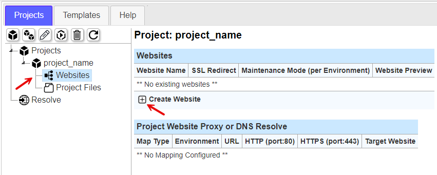
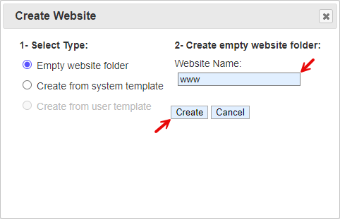
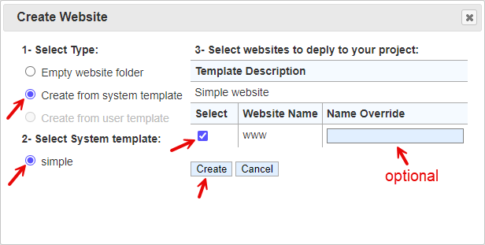
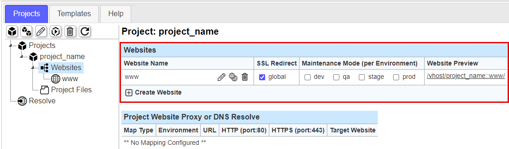
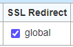
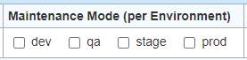
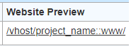
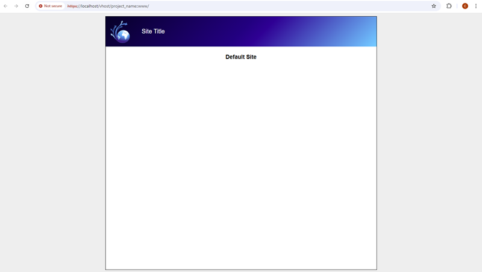

Create a Website
1- On the navigation tree, select 'Websites' to focus the websites panel. This panel doesn't have too many details at this point since there are no websites created under the project. The two tables that are shown here will list all the websites that belong to this project and any current Proxy or DNS mapping that has been created for websites. The section for 'Proxy or DNS Resolution' will cover that in more details. For now, this will cover the first website creation.
At the bottom of the 'Websites' table, select the icon to bring up the website creation dialog.

2- The website creation dialog has a 'Select Type' as step 1 where you can create an empty website folder or choose from system or user templates. This example with selecting 'Empty website folder' is used if you plan to start from scratch and want to craft how you build out the folder structure itself. You would enter the 'Website Name' and click 'Create'. This name will become the website folder name in the 'web_source/project_name' folder. Website names are limited to alphanumeric, dot '.', dash '-', and underscore '_' character and in lower case to ensure no filesystem problems occur. Windows and Linux/UNIX system treat lower case and upper case differently. In Linux/UNIX systems, folders and files by the same name with upper and lower case letters are different folders or files. In windows, upper and lower case letters will resolve to the same folder or file. This can be dangerous when working on source code on differnt platforms; especially when copying code from Windows to Linux/UNIX and vice versa.
For now, use the next example for creating a website from a system template.

This dialog option is when creating from a template (System or User defined). This example will use the default system website template that is default with the installation.
- Dialog Step 1, select 'Create from system template' radio button
- Dialog Step 2, choose 'simple' which is a simple website template that comes default with the installation
- Dialog Step 3, choose the checkbox under 'Select' column to select the website named 'www'. In the 'Name Override' column, you can specify a different name in the text box. Leaving the textbox blank will use the default 'Website Name' of 'www'. If you already have a 'www' website, you cannot create another one of the same name and will need to give the new website a new name.
- In the dialog select 'Create' to add the website to your project

3- The website will now show up under the 'Websites' table in the websites panel with several options. In the left navigation tree, the website lists under 'Websites' where you can select it and manage the website mapping settings. For now, below will cover the panel management.

In the column 'Website Name' to the right of 'www' there are the following icons for managing the website as noted in the table below:
Icon
Description
Rename Website
Clone Website
Delete Website
The 'SSL Redirect' checkbox will make a client browser redirect from HTTP to HTTPS. If using a load balancer in front of a web service to do any sort of SSL offload, where the website is HTTP and load balancer is HTTPS, this setting you may want to turn off as it can potentially cause issues. This may be done for performance reasons. It is usually best to SSL secure the website communcation end to end to make most security departments happier. This would mean the load balancer will handle SSL and and communicate to web service over SSL. There will be more details about this in the 'Advanced Uses' section.

The 'Maintenance Mode (per Environment)' checkboxes is used to set a website into maintenance mode. These boxes are settings per environment (See 'Environments' in 'Getting Started' section for more details). If having a setup where all environments connect to the same web source, you can toggle this setting to put different environments into maintenance mode from a management server (like this one). This does not apply to VHost preview (a Website preview) since the preview gives a user an ability to verify the website before taking it out of maintenance mode. The website user, viewing through a Proxy or DNS FQDN mapping, will see a maintenance page when toggled on.

The website preview link allows you to view the website you just creted from the 'Create Website' dialog.

When clicking the preview link, the new website will open in a new browser tab. This is not a simulation, it is a newly created simple website from the default system templates.
